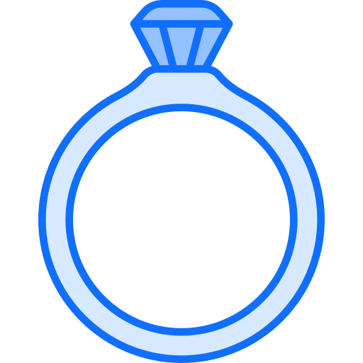
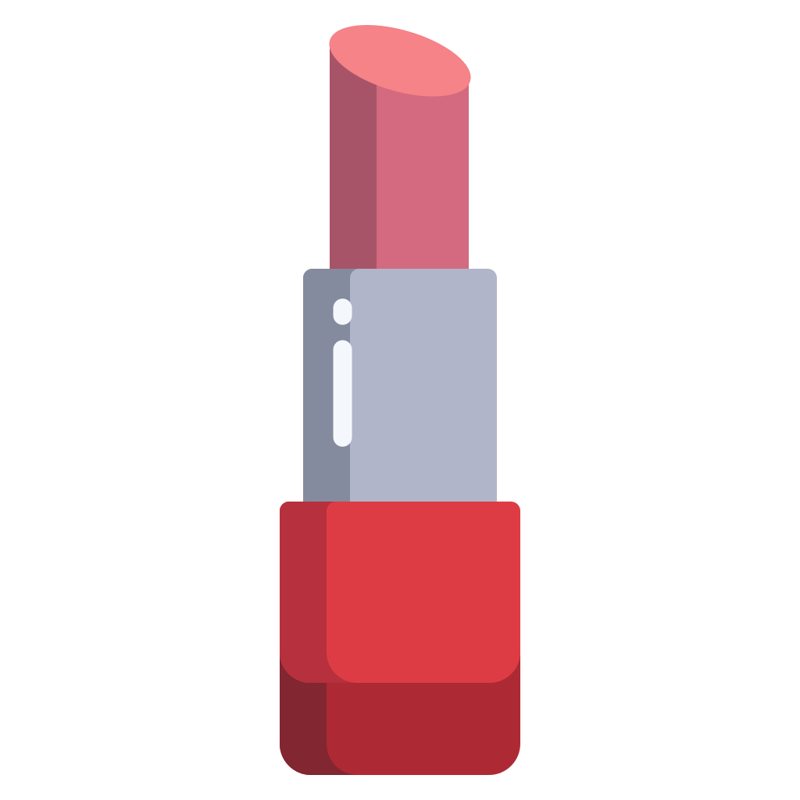
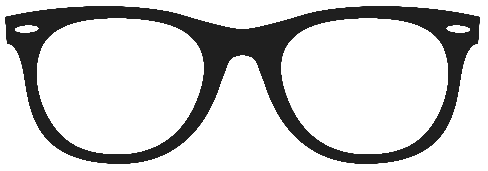
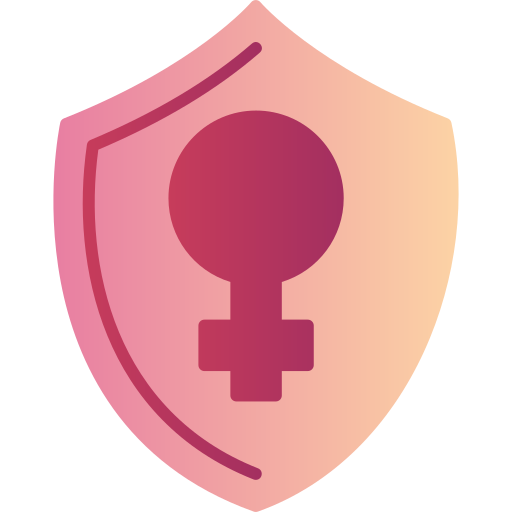

Plena Menopausa
Uma plataforma de telemedicina especializada no cuidado integral da saúde da mulher durante o climatério e a menopausa.
Veja mais.

Oura Ring
Um anel inteligente que utiliza sensores para monitorar o sono, frequência cardíaca,
temperatura corporal, estresse e outros indicadores de saúde e bem-estar.
Veja mais.

HAPTA
Um aplicador inteligente de maquiagem que facilita a aplicação de batom para pessoas com mobilidade
reduzida ou dificuldade nos movimentos das mãos.
Veja mais.

OrCam MyEye
Dispositivo inteligente que auxilia pessoas com deficiência visual ao reconhecer rostos, ler textos e
identificar produtos por meio de uma câmera integrada.
Veja mais.

PenhaS
Aplicativo desenvolvido para oferecer acolhimento, orientação e acesso a serviços de proteção para mulheres
em situação de violência.
Veja mais.
Ring
Campainha inteligente com câmera integrada que permite visualizar, conversar com visitantes e receber alertas
em tempo real pelo celular, aumentando a segurança da residência.
Veja mais.